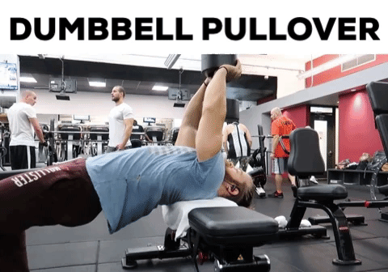

Place a dumbbell standing up on a flat bench.
Ensuring that the dumbbell stays securely placed at the top of the bench, lie perpendicular to the bench (torso across it as in forming a cross) with only your shoulders lying on the surface. Hips should be below the bench and legs bent with feet firmly on the floor. The head will be off the bench as well.
Grasp the dumbbell with both hands and hold it straight over your chest at arms length. Both palms should be pressing against the underside one of the sides of the dumbbell. This will be your starting position.
Caution: Always ensure that the dumbbell used for this exercise is secure. Using a dumbbell with loose plates can result in the dumbbell falling apart and falling on your face.
While keeping your arms straight, lower the weight slowly in an arc behind your head while breathing in until you feel a stretch on the chest.
At that point, bring the dumbbell back to the starting position using the arc through which the weight was lowered and exhale as you perform this movement.
Hold the weight on the initial position for a second and repeat the motion for the prescribed number of repetitions.
Caution: If you are new to this movement, have a spotter hand you the weight instead. If not, please ensure that the dumbbell does not fall on you as you arrange your torso to perform the exercise on the bench. Also, as I already mentioned, ensure that the dumbbell used is in perfect working condition. Old dumbbells in need of welding should never be used to perform this exercise.